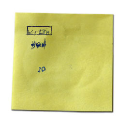
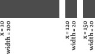
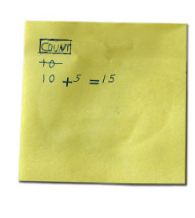
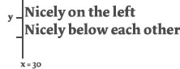
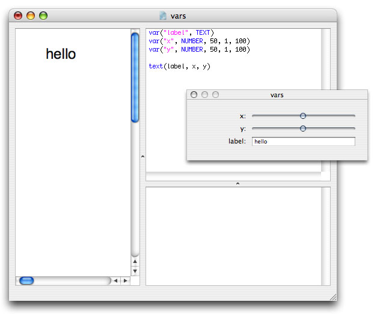

Variables
Portugese translation by Artur Weber
A variable is a place to store a value in computer memory. You could think of a variable as a cardboard box. You can put something inside the box, put it away for storage, and later on retrieve the item from the box. Usually, people put labels or some kind of code on boxes to remember what is inside.
It's the same with variables. Each variable has a name, and a value. The name is like the label on a box: it's a quick reminder of what item, or value, is inside the variable. Just like boxes, variables can hold all sorts of stuff useful in a NodeBox script: pieces of text, an important number, the name of a font, a list of colors, and so on.
Another way to look at variables is to think of them as a sticky note.
Why use variables
You store things in variables when you plan to reuse them. If each of ten rectangles you're going to draw is a hundred pixels wide, it's a good idea to declare a width variable that stores the number 100, and tell each rectangle to go look what's inside this width variable.
This way, when you change your mind about the rectangle's width, you only need to change the contents of the width variable, since each rectangle is looking over there for it's width.
Don't worry, things will clear up once we try some examples!
Declaring variables
You can declare a variable at any point in your script, and give it any name you like, except for names that NodeBox has already claimed (like rect, or for). Usually, you pick a name that tells something about what kind of information the variable is storing.
Try to come up with good, short names. No one likes to type theWidthOfAllRectangles an dozen times, width says enough.
 | It's as easy as this: we think of a good name for a variable, and assign any value to it we like. NodeBox keeps a small sticky note reminder for itself to know what value is inside the variable. width = 100 rect(10, 10, width, 30)Variables can be used as parameters. NodeBox looks up what value it contains. In this example, a rectangle is drawn at (10,10), with width of 100 and height of 30. |
Changing variables
You can change the value of a variable during the course of a script. When this happens, the old value is thrown away, and from now on the variable contains the new value.
|  | The first rectangle's width is 100, then the value of the variable changes to 20, so the two following rectangles use that new value and have width 20. width = 100 rect(10, 10, width, 30 ) width = 20 rect(120, 10, width, 30) rect(330, 10, width, 30) |
|  | The resulting output in NodeBox. |
Calculations with variables
When you store numbers in variables, you can perform math operations on them, multiply them, increase them, and so on. This is essential when positioning text for example: you don't want to calculate the position of each piece of text by yourself. Rather, paragraph text should go neatly below the title - and when the title font size changes, the paragraph text should move along by itself.
Thus, the paragraph's vertical position should be dependant on the title's vertical position.
|  | count = 10 print count >>> 1 count += 5 print count >>> 15 |
|  | x = 30 y = 30 quote = "Nicely on the left" text(quote, x, y) y += textheight(quote) quote = "Nicely below each other" text(quote, x, y) |
Where do variables live?
Each script has its own memory storage, it's own warehouse of boxes and sticky notes. The specific value of a variable is therefore only known inside the script where it is used, not in other scripts.
Predefined variables
NodeBox has a set of predefined variables that contain information about the state of your script. These variables can only be looked at, not modified.
- WIDTH: the width of the drawing area
- HEIGHT: the height of the drawing area
- PAGENUM: the current page being exported in a multi-page export.
- FRAME: the current frame in an animation.
Some variables can be used to create interactive animations:
- MOUSEX: the horizontal location of the mouse cursor
- MOUSEY: the vertical location of the mouse cursor
- mousedown: is True when the mouse button is pressed, False otherwise
- keydown: is True when a key is being pressed, False otherwise
- key: the last key pressed
- keycode: the integer keycode of the last key pressed
- KEY_UP, KEY_DOWN_ KEY_LEFT, KEY_RIGHT, KEY_BACKSPACE contain the keycodes for the arrow keys and the backspace key.
The variable panel
The variable panel displays script variables visually as sliders, fields, or check boxes. When you drag variable sliders, its values change on the fly, changing the output in the drawing area. Any random() values in your script are retained as long as you don't re-run your script. In other words, random values change when you run a script, but not when you change values or drag sliders in the variable panel.

The command to add variables to the variable panel is the var() command.
- var(name, NUMBER, default, min, max)
- var(name, TEXT, default="hello")
- var(name, BOOLEAN)
- var(command, BUTTON)
You can then use the name variable in your script like any other variable. Numbers produce a slider, text an input field and booleans (True or False) a checkbox. The command parameter for buttons is the name of a command in your script to call when the button is pressed.
The variable panel is inspired on Bob Ippolito's widget drawer in the original DrawBot.